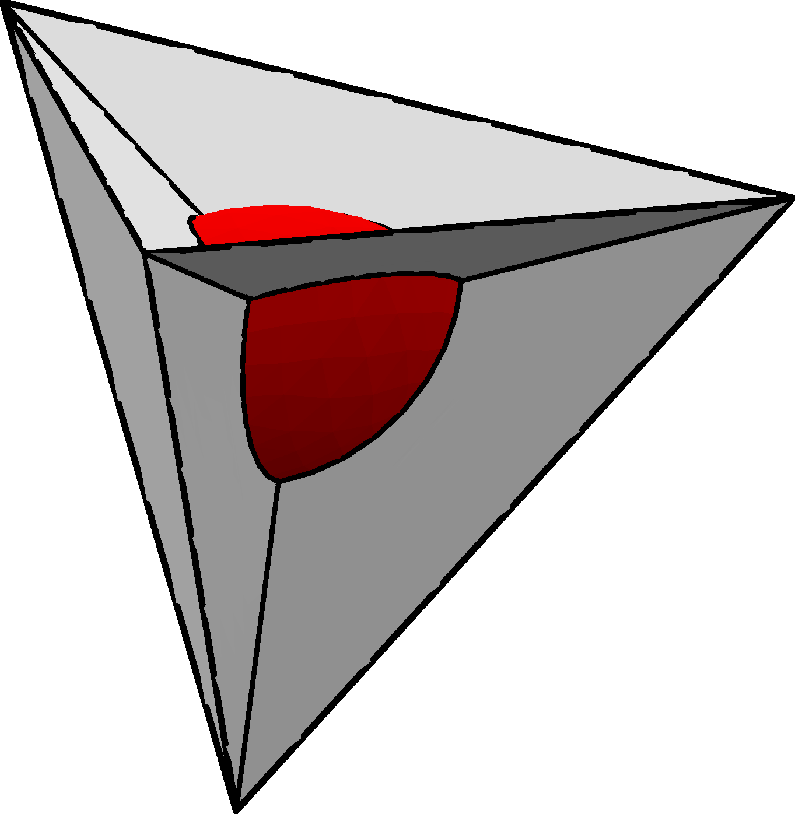

I have moved to ETH Zurich! This site is no longer maintained. Find my current site here .
My research interests are in algebraic geometry. Below is a description of some of my projects.
My most recent paper, joint with Alexander Polishchuk is Birational models of M_2,2 arising as moduli of curves with nonspecial divisors. We give geometric characterizations of the stable curves for various stability conditions, and then use the explicit coordinates to show that one of the moduli spaces is the blow down of the Weierstrass divisor.
This work is concerned with a conjecture of Le Potier about a "strange duality" for sections of theta bundles on moduli spaces of sheaves on surfaces. We considered the case of del Dezzo surfaces. Our result (joint with Aaron Bertram and Thomas Goller) provides supporting evidence for this conjecture by performing two very different computations: a computation of sections of the theta bundles on Hilbert schemes (via a theorem of Ellingsrud, Goettsche, and Lehn) and a multiple point computation (from a algorithm suggested by Marengell and Rimanyi). Surprisingly, these two computations match!
Our paper is on the arXiv: Le Potier's strange duality, quot schemes, and multiple point formulas for del Pezzo surfaces.
My thesis contains some things not in the paper, such as a the full output of our computations, but the paper above should be preferred for most purposes.
My more recent paper Universal Series for Hilbert Schemes and Strange Duality explains how the "finite quot scheme method" of strange duality for surfaces (used in our paper above) leads to conjectures connecting certain universal generating series. Parts of my conjecture have now been proved. See here and here.
I spent some time thinking about tropical geometry, where replacing multiplication and addition with addition and minimum produces a world where the combinatorial shadows of classical algebraic geometry can be seen. My paper is about understanding the conditions under which a tropical hypersurface is uniquely determined by incidence conditions. Determining Tropical Hypersurfaces.
For my master's thesis, I proved a result about a mirror symmetry conjecture involving an isomorphism between Frobenius algebras obtained from FJRW theory and an orbifold Milnor ring. My thesis is here, and a small generalization was added and published in String-Math 2011 as Landau-Ginzburg Mirror Symmetry for Orbifolded Frobenius Algebras.
Also, as part of my work, I wrote code in Sage to compute FJRW invariants. I also wrote some code, inspired by Faber's Maple program, that computed top intersections on the moduli space of curves. Recently, I wrote some more code that calculates any product on the moduli space. Both of these projects are now distributed on PyPI for easy installation!
As an undergraduate in the IMPACT group, I experimented with various algorithms for analyzing gas chromotography/mass spectrometry data. My write up can be found here. I learned MATLAB while working on this.
My first undergraduate research experience was with Gary Lawlor at BYU, where we investigated a new technique for proving the minimality of certain soap films. My result about the bubble-in-a-tetrahedron (pictured below) was eventually simplified, generalized, and published as Isoperimetric surfaces with boundary, but I have included my first attempt at writing a mathematical paper here because I think the explicit computations are interesting.
